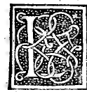

CAPITOLO VI¶
Sequita lordine del stilobata ouer pilastro ouero basamento dela colonna corame si facia.

Lo stilobata fia sustentamento dela colonna qual noichiamamo pilastrello ouer basamento dela colonna comme vedete in la figura edef. quadrilatera quale ha similmente sua basa abed. e suo capitello ouer cimasa efran. facte e adornate de lor gradi plinto tori scotiche quadre alibito. Ma epso elimitato in larghezza precise quanto la longhezza del plinto dela basa dela colonna alui sopra posta corarae vedete el plinto dela troncata hg. equale epero ala larghezza del stilobata ef. e ed, aliuello che altramente non sustirebe el peso sopra postoli stando obhquo. E uedete corame tutta la basa dela colonna hgkl. sopra epso se posa. E quanto ben responde sua vnghezza alochio.
Onde lordine de dieti gradi osieno quadre ouer scotiche fia che sempre le loro proiecture ouer sportafore da luna parte e laltratanro eschino fore quanto sonno larghe ouero alte aeio sempre diete proiecture dextre e sinistre respondino quadrate si fossero bene 10.000 in sua basa e capitello. Il che ancora corame sotto intenderete se deue obseruare nelarehitraue e sua cornitione. E se nel dicto stibolato vorrete fare più vno ornamento che laltro corame se costuma de fogliami o animaU fateli dentro sua superficie in modo che non samortino le sue equidistanti cdef. e ancora ce. e df.
E deue essere dicto stilobata alto doi sue larghezze o volete dire quanto doi lunghezze del plinto colunnare aponto acio debitamente sia proportionata aluno e alaltro modo cioè ala fortezza del peso e venusta de lochio conrespondente alaltre parti delo hedificio comme vedete in Io exemplo dela figura dela porta detta. Speciosa posta in principio del libro composta dela colonna stilobata epistilio e cornitione acio ve sia nota lor coniunctione. Questo pilastro conuen sia ben fermato de fondamento sotto per epso e per tutto el soprapostoli che almanco sia aponto sotto terra fondato fin aluiuo piano aliuello de bon muraro altramente le vostre opere ruinarebono contutto el difitio.
Edeuese almanco fare sua larghezza quanto aponto prende la basa delo stilobata se non più. Enotate bene che tanto vogliano sportate in fore daluno lato ede laltro le proiecture dela sua basa abcd. quanto quelle del suo capitello efmn. o vero quelle dela basa aleuolte potrete far più longhe de quelle del suo capitello ma non mai più corte comme vedete in la dieta figura per exemplo et cetera. El suo fondamento dali antichi fia detto steriobata e intendese quanto aponto ne ocupa la basa del stilobata ab. Si che tutto recatene amente.
Per- la qual cosa ancora arete anotare per li gradi e dela basa e del capitello de dicto stilobata quali aleuolte secondo li lochi doue sonno situati hano diuersi nomi peroche porrete vnconcio a vna porta e vnaltro simile ne porrete ala finestra e camino quali medesimamente seruano suo nome cioè stipiti cardinale fregio et cetera. Cosi qui nel stilobata in basa e capitello interuene. Impero chel supremo grado del suo capitello se chiama dali antichi acrotherio. El sequente cimatio edali nostri intaulato.
El terzo fastigio el quarto Echino ed ah nostri vouolo el quinto Baltheo o vero trochilo li nostri li dicano regolo al septimo Thenia li antichi li nostri a quello che in mediate e sopra lostilobata li dicano intaulatura. E voi per vostro ingegno son certo che meglio aprehendarete che io non dico. Costumase per molti in dicto pilastro ponere lettere per diuersi ordinate che dicano e narrano loro intento belle Antiche con tutta proportione e cosi in altri frontespicii e fregi e monumenti loro epytaphii quali senza dubio molto rendano venusto lo arteficio.
E pero a questo fine ho posto ancora in questo nostro volume detto dela diuina proportione el modo e forma con tutte sue proportioni vno degno alphabeto Anticho mediante el quale potrete scriuere in vostri lavori quello ve acadera e sirauo senza dubio da tutti commendati. Auisandoue che per questo solo mi mossi adisponerlo in dieta forma acio li scriptori eminiatori che tanto se rendano scarsi ademostrarle li fosse chiaro che senza lor penna e pennello. Le doi linee mathematici curua e recta o volino o non aperfectione le conducano comme ancora tutte laltre cose fanno conciosia che senza epse non sia possibile alcuna cosa ben formare.
Comme apien in le dispositioni de tutti li corpi regulari edependenti di sopra in questo vedete quali sonno stati facti dal degnissimo pletore prospectiuo architecto musico. E de tutte virtù doctato. Lionardo dauinci fiorentino nella cita de Milano quando ali stipendii dello Excellentissimo Duca di quello Ludouico Maria Sforza Anglo ciretrouauamo nelli anni de nostra Salute 1496. fin al 99. donde poi da siemi per diuersi sucessi in quelle parti ci partemmo e a firenze pur insiemi. Trahemmo domicilio et cetera. E cosi sonno dicti nomi ancora in la basa de dicto stilobata giontoui sima; bastone intauolato etc.
Eie forme de dicti corpi materiali bellissime con tutta ligiadria quiui in Milano demie proprie mani disposi colorite e adorno e formo numero 60. fra regulari e lor dependentì. El simile altre tanti nedisposi per lo mio patrone San Galeazzo Sanseuerino in quel luogo. E poi altre tante in firenze ala exempla del nostro Signore Gonfalonieri perpetuo Petro Sederino quali al presente in suo palazo seritrouano.